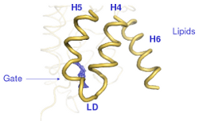
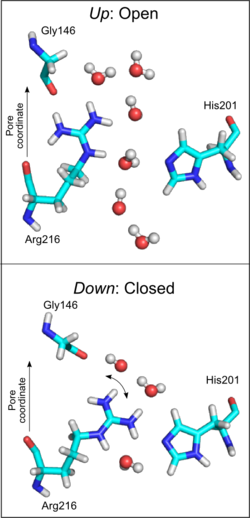

Max Planck Tandem Group
|
Aquaporin water channels
 Aquaporins are protein channels responsible for the permeation of water
and other small solutes through biological membranes in response
to osmotic pressure. The aim of our studies is to expand our understanding on the molecular machinery of aquaporins by employing molecular dynamics simulations and related computational techniques.
Aquaporins are protein channels responsible for the permeation of water
and other small solutes through biological membranes in response
to osmotic pressure. The aim of our studies is to expand our understanding on the molecular machinery of aquaporins by employing molecular dynamics simulations and related computational techniques.
We provide a solute permeation mechanism for the solute permeation through the Plasmodium falciparum
aquaglyceroporin that is a promising antimalarial drug target. In this
mechanism, hydrophobic regions in the middle of the channel are the
main water rate limiting barriers. In addition, the replacement of
water-arginine interactions and solute-matching at the most constricted
region of the channel are the main determinants underlying selectivity
for the permeation of solutes like glycerol and urea.
Read more:
Regulation of aquaporins has nowadays become an active field of
research. Channel gating, in particular, has emerged as an efficient
regulatory mechanism for organisms to quickly counteract sudden osmotic
shocks. We investigated the molecular causes of gating of the yeast
aquaporin-1 (Aqy1), and the human aquaporin 4 (hAQP4).
 Our results suggest that the yeast aquaporin-1 (Aqy1) may be regulated
by either phosphorylation of a serine residue (Ser107) or
mechanosensing. Both possibilities lead to similar opening transitions
after a local rearrangement of the residues located at the gate of the
pore. In the figure above the closed and open states are depicted in yellow and blue, respectively (see also a movie).
Our results suggest that the yeast aquaporin-1 (Aqy1) may be regulated
by either phosphorylation of a serine residue (Ser107) or
mechanosensing. Both possibilities lead to similar opening transitions
after a local rearrangement of the residues located at the gate of the
pore. In the figure above the closed and open states are depicted in yellow and blue, respectively (see also a movie). We observed that there is a principal collective motion causally involved in these gating transitions, and that it is possible to attain reproducible opening events along this collective coordinate. Our results also suggested, for the mechanism of mechanosensing, that external forces triggering gating transitions are transmitted from the lipid membrane to the gate of the pore (which is not in direct contact with the membrane) via coupled movements of the helices four, five, and six, the latter being in direct contact with the membrane (see movie). Our simulations together with structural and functional studies support a mechanism in which both phosphorylation and mechanosensitive gating can trigger the channel opening. Regulation of Aqy1 by phosphorylation may also be exploited in physiological contexts, when less rapid changes in water transport activity are required. Hence, phosphorylation may fine tune the water flux during normal conditions of growth, whereas mechanosensitive gating could provide a rapid pressure valve in response to unexpected shocks. In addition, Aqy1 regulation may help yeast to survive rapid freezing and thawing, aiding the organism's quest to adapt and survive.
Read more:
Movie:

We explored the hypothesis of voltage-regulation for human aquaporin-4 (hAQP4) in silico. We observed in our simulations that the single-molecule water permeability of hAQP4 can be voltage regulated, with a decrease when switching from a positve to a negative membrane potential. The conserved arginine residue (arg216) at the aromatic/arginine region was found to be alternating between two states, gating the pore, and switching due to an applied electrostatic potential. Remarkably, similar findings were observed for human aquaporin-1, in previous computational studies carried out by J. Hub, suggesting therefore that voltage sensitivity may be a general feature of AQPs.
Voltage-regulation of hAQP4 may have important physiological role in the central nervous system (CNS). There, hAQP4 colocalizes with the Kir4.1 postassium channel, and both proteins have been suggested to work as a water-potassium transport complex. It will therefore be highly interesting to test the simulation based voltage regulation hypothesis in AQPs experimentally and to study its physiological implications at the CNS.
Read more:
|